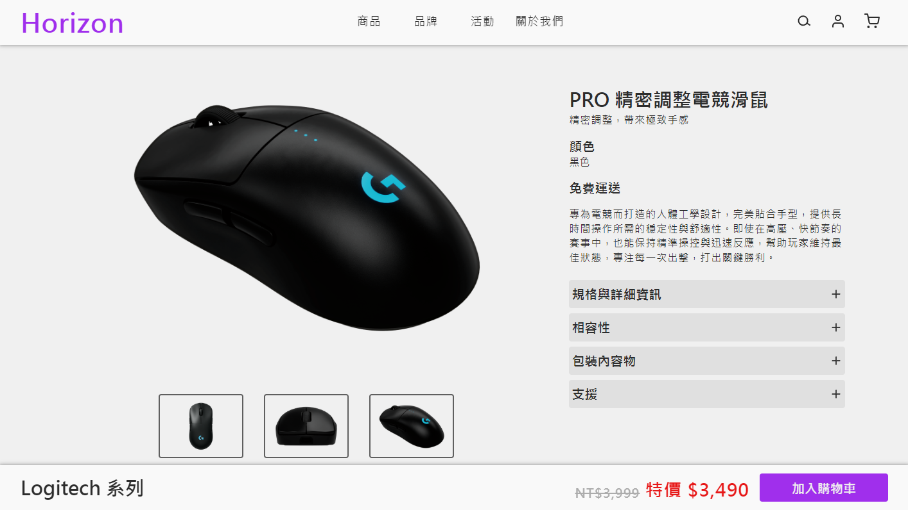

Horizon | 電商網站
2026 / 01 ～ 2026 / 04
- Nuxt 3
- Vue 3
- TypeScript
- Pinia
- Element Plus
- Supabase
- Vercel
此專案為個人從 0 開始規劃與設計之電商平台，並將既有 Vue 2 架構重構為 Nuxt 3，導入 TypeScript 與 Supabase， 建立具備型別安全與可維護性的應用架構。
專案涵蓋商品展示、搜尋篩選、購物流程與後台 CRUD 管理， 透過 RESTful API 串接前後端，實作使用者驗證與權限控管， 並整合狀態管理與表單驗證，提升系統穩定性與使用者體驗。
測試帳號
亦可自行註冊新帳號進行體驗。
- Admin
- horizon@aaa.com
- Password
- 00000000